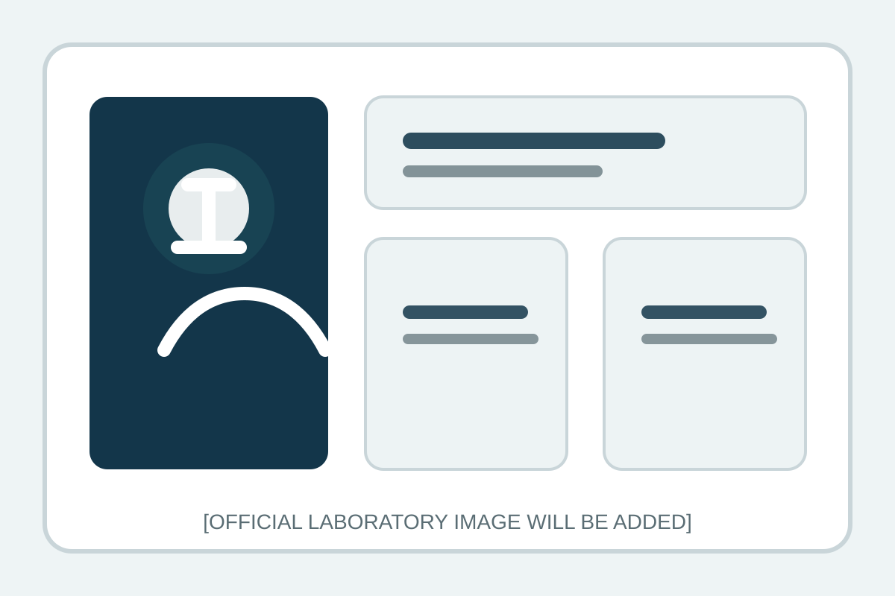

Who We Are
Laboratory Identity
[LABORATORY DESCRIPTION]
National Reference Laboratory Website Placeholder

Laboratory Overview
The site structure is ready for official institutional information and keeps all unavailable details visibly marked as placeholders.
Who We Are
[LABORATORY DESCRIPTION]
What We Do
[DIAGNOSTIC ROLE DESCRIPTION]
What We Research
[RESEARCH ROLE DESCRIPTION]
How To Access Services
[SERVICE ACCESS INSTRUCTIONS]
Core Sections
Primary homepage sections mirror the laboratory’s future official information architecture.
Featured Publications
Publication cards below use structured placeholder records so future updates can be made in a single data file.
Resources
Resources are grouped to support replacement with official clinical, laboratory, and educational materials later.
Contact
Official contact details, operating hours, and submission instructions will be inserted once confirmed by the laboratory.